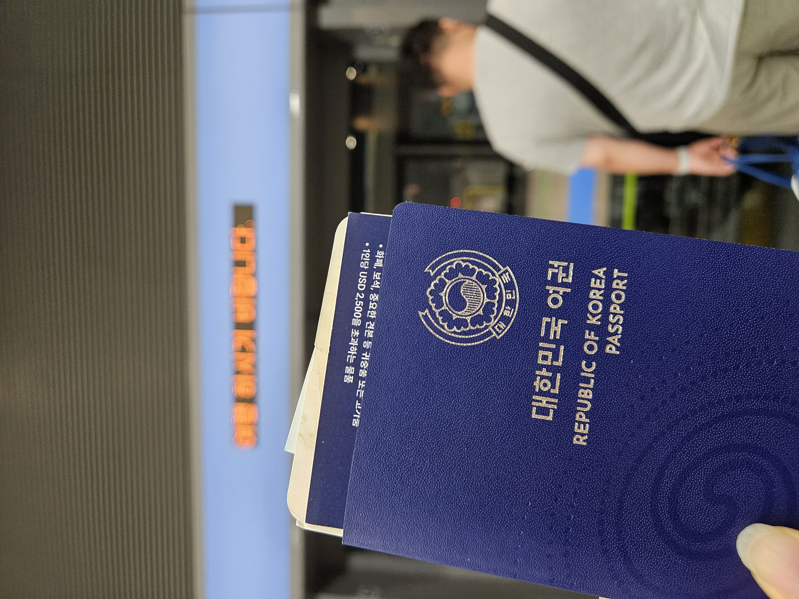
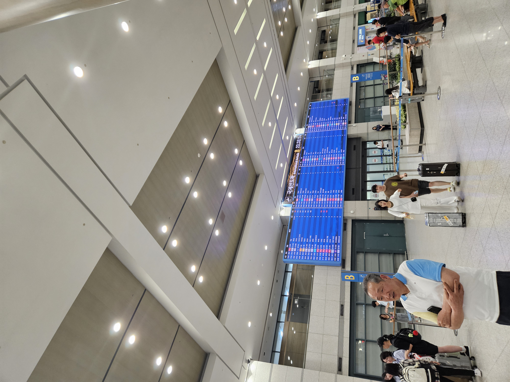
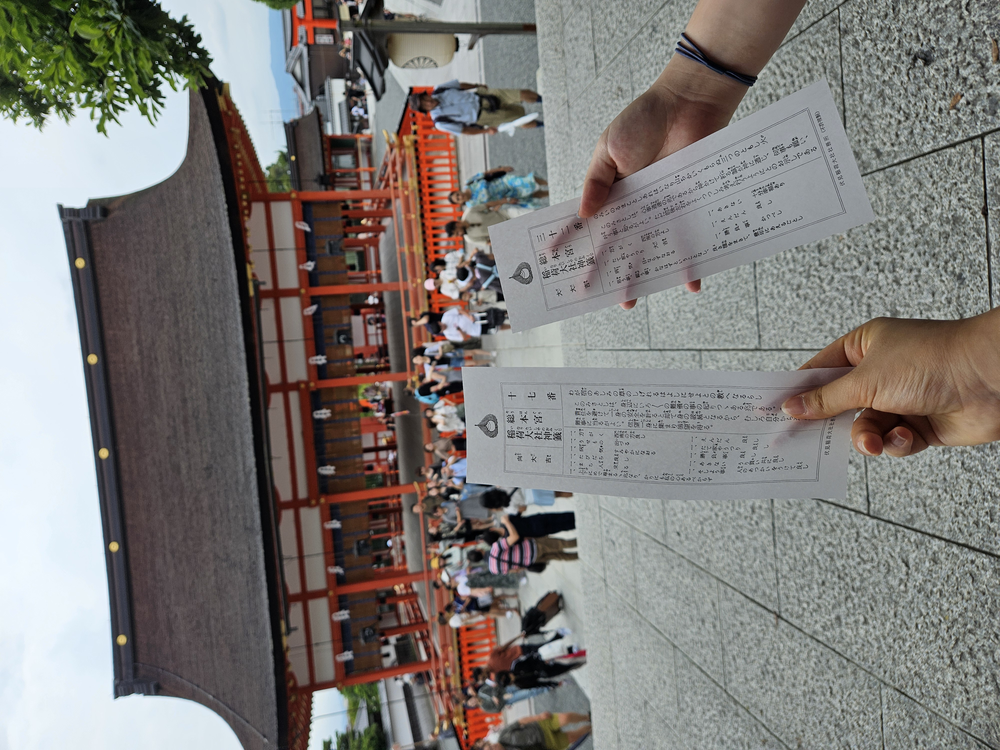
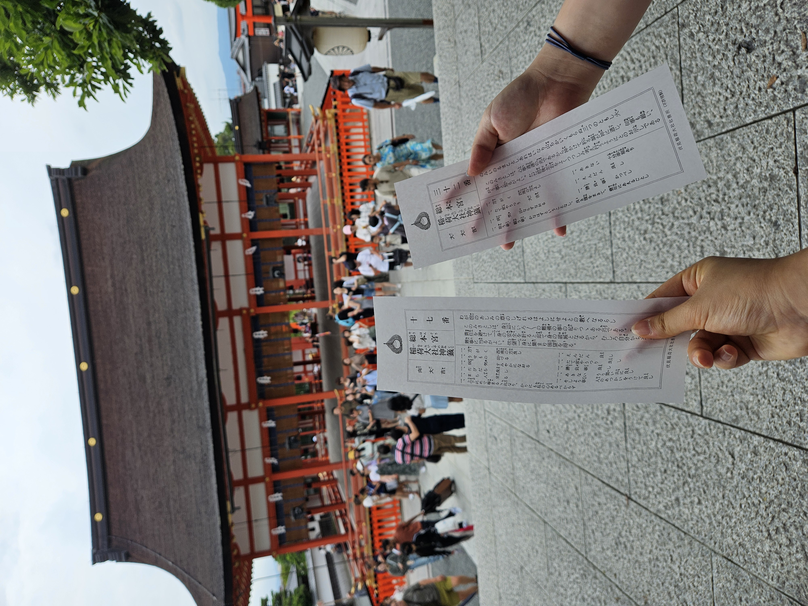

넷째날
11:00
기상 후 교토역 도착. 짐을 역사 내의 코인락커에 넣어두고, 점심을 먹으러 갔다. 마찬가지로 역사 내의 일식 전문 식당에 갔다.
나는 자루소바를 양씨는 우동을 시켰다.
12:30
마지막 여행지인 후시미 이나리에 도착.
떠나기 전에 기모노는 입어봐야 할 것 같아서 입어보았다.
후시미 이나리 신사의 이명은 여우신사로, 곳곳에서 여우 석상을 볼 수 있었다. 빨간 칠이 되어있는 도리이(신사의 문)(인터넷서 사진 긁어올 예정)가 유명하다.
가기전에 의문이었던 것은, 토리이가 유명하다면 분명 사진에 관광객이 많이 찍힐 텐데, 대부분의 사진에서 사람이 별로 없는 것이었다.
물론 그 의문은 후시미 이나리 신사에 1만개의 토리이가 설치되어있었고 그 수가 수 킬로키터에 걸쳐 있다는 사실을 눈으로 보고 난 이후 사라졌다.
기모노랑 잘 어울려서 사진이 가장 이쁘게 나왔던 것 같다.
점을 칠 수 있어서 각각 200엔씩을 내고 봤다. 숫자가 매겨진 나뭇가지가 든 나무통을 흔들어 숫자를 확인하고, 그 숫자에 해당하는 운세종이를 받는 방식이다.
나는 향대길(길 중 좋은 걸로는 뒤에서 두번째. 대길이 있는 방향으로 향하게 될 것이라는 뜻), 양씨는 대대길(뽑을 수 있는 운세 중 가장 좋은 것.)이 나왔다.
14:20
기모노를 입은 채 한 레스토랑에 들어갔다. 시킨 건 허니브레드. 이름이 시로 느와르(shiro noir)였는데 뭔가 싶었다.
15:00
기모노를 반납한 뒤, 교토역으로 돌아가 짐을 찾고 그대로 오사카로 향했다.
둘쨋날에 양씨가 잃어버렸던 물건은 오사카에서 샀던 기념품이었는데, 한국에서는 구하는 게 불가능에 가깝기 때문에 다시 구매하기로 결정. 그렇게 오사카를 조금 구경하면서 간사이 공항에 도착했다.
원래는 훨씬 복잡한 길을 가야했는데, 우연찮게 간사이 공항선을 발견했다. 바로 티켓을 끊고 탑승. 편하게 이동했다.
18:00
공항에 도착. 수속을 대충 끝내곤, 20시에 공항 내에서 밥을 먹었다. 각각 다른 식당에서 밥을 먹었는데, 나는 라멘을, 양씨는 이탈리안 음식을 먹었다.
밥을 먹고 나서 양씨는 기념품으로 가져갈 말차 초콜렛을 샀다.
밥을 다 먹고 나서는 동전을 전부 꺼냈다. 한국 은행들은 동전은 환전을 해주지 않았다. 그 말인 즉슨, 모든 돈을 만원 단위로 남겨둬야 한다는 뜻이었다.
그렇게 동전을 끌어모아 3엔만을 남기고 전부 지폐로 바꾸는 데 성공. 돈을 환전하는 과정에서 산 포카리를 마시며 비행기가 오기를 기다렸다.
21:30
비행기 탑승. 마찬가지로 같은 항공사. 이번에는 지연이 되지 않아서 행복했다.
23:00
인천공항 도착. 짐을 찾고 나왔다. 일반적으로는 집앞까지 가주는 공항버스가 있어서 그걸 타곤 했는데, 우리가 문을 나왔을 때는 이미 모든 버스가 끊긴 상황이었다.
그래서 부모님의 차를 타고 돌아왔다. 1시간 가량 정도 걸린 듯 하다.



여행 끝.


 
